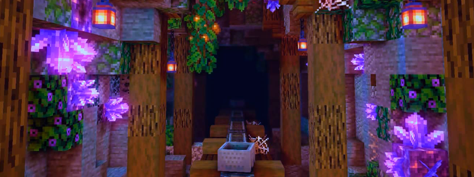

NEWS
2.3 DEV9
CHANGELOG
NEWS
SOON WILL BE REMOVED
- Customizable Elytra 🛈 Dyed elytra and elytra wings
- Guarding 🛈 Shield parrying ability and enchantments
- Omnihoppers 🛈 Liquid and flipped hoppers
MODS
ADDED
- Socket Wrench 🛈 Wrench tool that can rotate blocks
CHANGES
RECIPES
- Quartz slabs and stairs can be smelted into smooth variants
- Sandstone slabs and stairs can be smelted into smooth variants
- Stone slabs and stairs can be smelted into smooth variants
- Stone and deepslate can be cobbled on stonecutter
BALANCE
- Stone and netherrack gives less experience when smelted
Amethyst